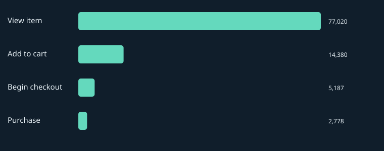
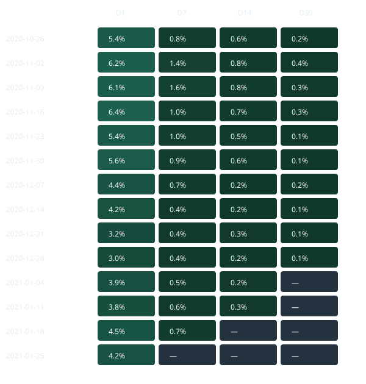

OBSERVED FINDING
{{ f.title }}
{{ f.evidence }}
{{ f.interpretation }}
Next action
{{ f.action }}
PRODUCT ANALYTICS & EXPERIMENTATION PLATFORM
Where does the shopping journey break down—and what evidence would justify the next product change?
Google Merchandise Store · GA4 public ecommerce export
{{ r.start[:4] }}–{{ r.start[4:6] }}–{{ r.start[6:] }} → {{ r.end[:4] }}–{{ r.end[4:6] }}–{{ r.end[6:] }}
01 / THE DECISION
Funnel friction, repeat behavior, and changes in performance—connected to a concrete next action.
OBSERVED FINDING
{{ f.evidence }}
{{ f.interpretation }}
Next action
{{ f.action }}
{{ r.reason }} The next decision is to authenticate, run the audit, and verify whether the observed event coverage supports the proposed funnel. This page does not substitute synthetic behavior for missing evidence.
View the one-time setup02 / DATA & ARCHITECTURE
Transformations belong in SQL. Python adds statistical diagnostics. The site reads the resulting evidence.
Airflow coordinates a manual historical replay with retries and a validation gate. Raw identifiers stay in BigQuery.
03 / ECOMMERCE FUNNEL
The primary funnel counts sessions that reach each stage in strict timestamp order. User reach counts distinct observed users at each event, without assuming a sequence.

Download funnel counts and denominators ↗{% else %}ANALYSIS CONTRACT
Proposed sequence. Existence and counts remain unverified. Publication fails if a required event is absent.
{% endif %}04 / RETENTION
Exact-day return after first observation, grouped by mature cohorts, initial device, geography, acquisition fields, and first-session behavior.
Users without enough follow-up are excluded separately at each horizon. Initial behavior is frozen; lifetime purchases never become a historical cohort attribute.
First observation is not signup. Browser identifiers cannot establish cross-device loyalty.

Cells use eligible users only; blank cells are censored or below the sample threshold. Partially mature weeks can have different denominators by horizon.
Inspect retention cohorts ↗{% else %}CENSORING RULE
Heatmap cells appear only after the cohort counts have been generated and validated.
{% endif %}05 / KPI FRAMEWORK
Purchasing users is the north-star candidate. Funnel inputs explain reach; revenue and conversion describe outcomes. Coverage determines which guardrails are usable.
| Metric / grain | Numerator | Denominator | Boundary |
|---|---|---|---|
| {{ m.name }}{{ m.grain }} | {{ m.numerator }} | {{ m.denominator }} | {{ m.caveat }}SQL & exclusions{{ m.sql }}{{ m.exclusions }} |
06 / MONITORING
A trailing median and median absolute deviation identify unusual users, sessions, conversion, transactions, revenue, and checkout completion. The current day never enters its own baseline.
Short history and repeated comparisons limit interpretation. Flags open an investigation; they do not establish an outage.
| Date | Metric | Robust score |
|---|---|---|
| {{ a.date }} | {{ a.metric }} | {{ '%.2f'|format(a.score) }} |
No strong anomalies under this rule. No incident is asserted.
{% endif %}{% else %}HISTORICAL REPLAY
The detector is ready to evaluate real daily aggregates. Missing measurements are not zero, and a static historical source does not trigger a freshness alert.
{% endif %}07 / ROOT-CAUSE INVESTIGATION
A symmetric rate decomposition separates changes in segment composition from changes in segment conversion. Contributions reconcile exactly to the overall rate change.
{{ r.investigation.status }}
{% if r.investigation.cases %}Investigated date: {{ r.investigation.date }}. Comparison uses prior matched weekdays.
| Dimension | Total Δ (pp) | Mix (pp) | Within (pp) |
|---|---|---|---|
| {{ c.dimension }} | {{ '%+.2f'|format(c.delta*100) }} | {{ '%+.2f'|format(c.mix*100) }} | {{ '%+.2f'|format(c.within*100) }} |
A case is selected from a real conversion flag. Until observed aggregates exist, there is no defensible period to diagnose.
{% endif %}Dimensions are separate views of the same change, not additive causes. Product-category coverage is audited separately at transaction grain.
08 / PROSPECTIVE EXPERIMENT
Choose the largest adequately observed stage dropoff and propose a focused product change. Persist assignment at the user level and measure the next stage in the first eligible session.
Baseline, sample size, and duration come from eligible-user aggregates—not session counts substituted into a user-randomized test.
Read the experiment protocol ↗DESIGN · NO TREATMENT RESULTS
{% if verified %}{{ r.experiment.product_change }}
{{ r.experiment.status }}
{% if r.experiment.scenarios is defined %}Observed eligible-user baseline: {{ '%.2f'|format(r.experiment.baseline*100) }}%. Planned relative MDE: {{ '%.0f'|format(r.experiment.relative_mde*100) }}%.
| Power | Users / arm | Days |
|---|---|---|
| {{ '%.0f'|format(s.power*100) }}% | {{ s.per_arm }} | {{ s.duration_days }} |
{{ r.experiment.decision }}
{% endif %}{% else %}Sample-size and duration scenarios will appear after execution. No uplift, treatment performance, or experimental outcome has been invented.
{% endif %}09 / ANALYTICS ENGINEERING
Source rows → one session → one user → one valid transaction. Aggregate marts retain their own denominators.
stg_events
int_sessions · int_users
fct_purchases
mart_*Unique keys, event reconciliation, transaction conflicts, chronological consistency, retention bounds, and funnel nesting stop invalid results from reaching the site.
Canonical SQL generates dbt models. A manual Airflow replay logs stages and retries failures. Query hashes and processed bytes accompany each local warehouse execution.
10 / REPRODUCIBILITY
The static site needs no credentials. Warehouse execution needs your own Google Cloud query project and application-default authentication.
cd google-merchandise-product-analytics
python -m pip install -e ".[dev]"
gcloud auth application-default login
# PowerShell: set your actual project ID
$env:GOOGLE_CLOUD_PROJECT="your-project-id"
python -m src.pipeline all
python -m pytestThe full run audits, models, validates, exports, analyzes, monitors, and builds this page. Query scans are bounded before execution; measured bytes are logged when available.
Download the generated report ↗11 / LIMITATIONS
Obfuscation
Google warns that placeholders and limited internal consistency affect this export. It cannot be reconciled with the Analytics demo account.
Identity & time
Pseudonymous users are browser identifiers. The source window truncates earlier history and later returns; event dates and UTC timestamps have different roles.
Association & causality
Device, acquisition, and first-session behavior are observed characteristics. There is no randomized treatment assignment or causal product lift in these data.
Refund, performance, and bounce-like guardrails are not assumed available. Source freshness is a documented production extension, not a historical alert.
Google’s dataset documentation ↗